Presented the ML-KEM split-execution architecture for embedded TrustZone-A systems at Korea Computer Congress 2026. Presentation, Outstanding Paper Award, and photographs from the trip to Jeju.
14 PHOTOGRAPHS · SELECT TO ENLARGE
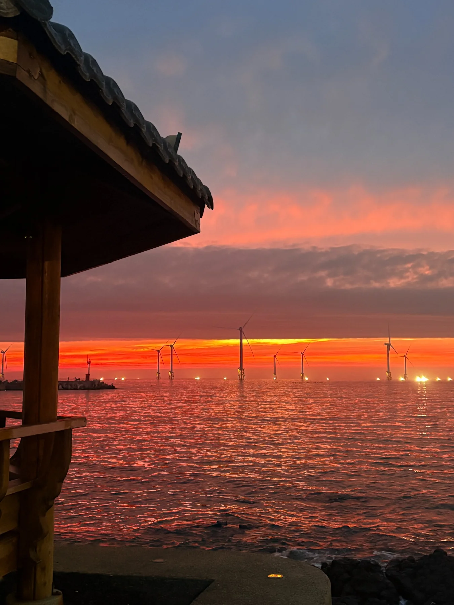
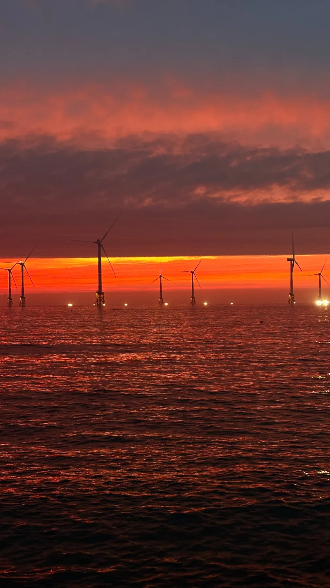
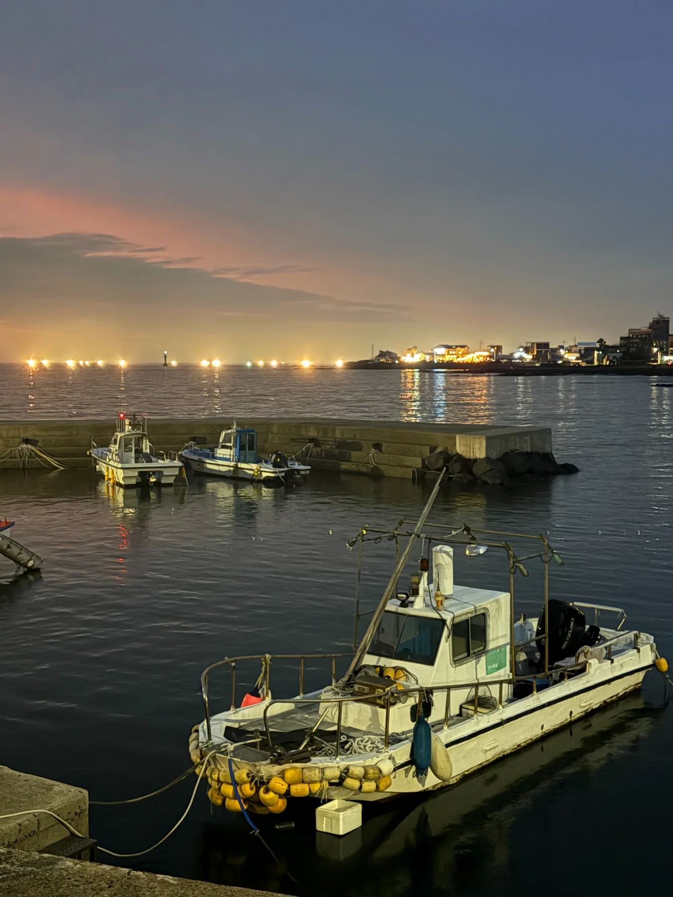
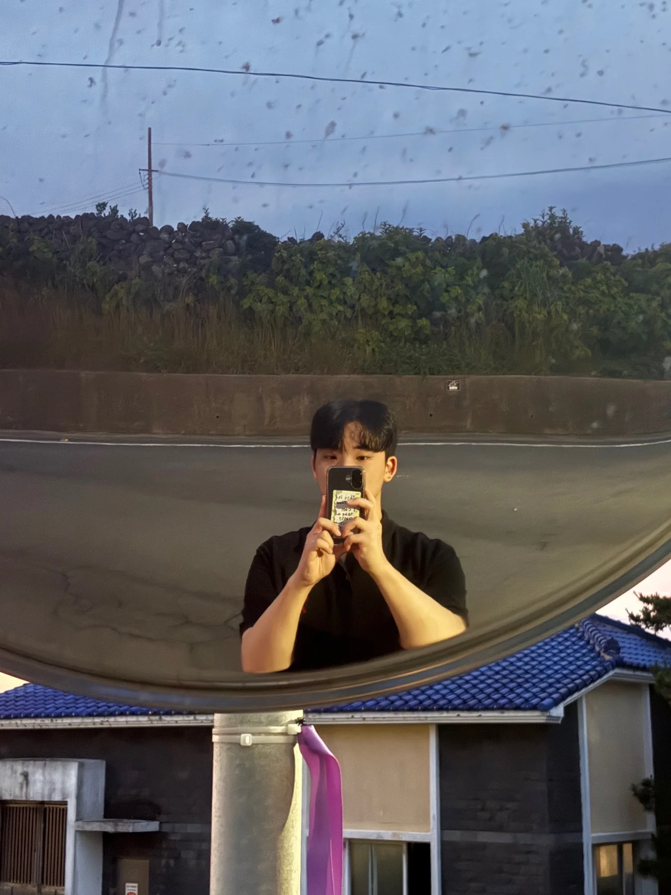
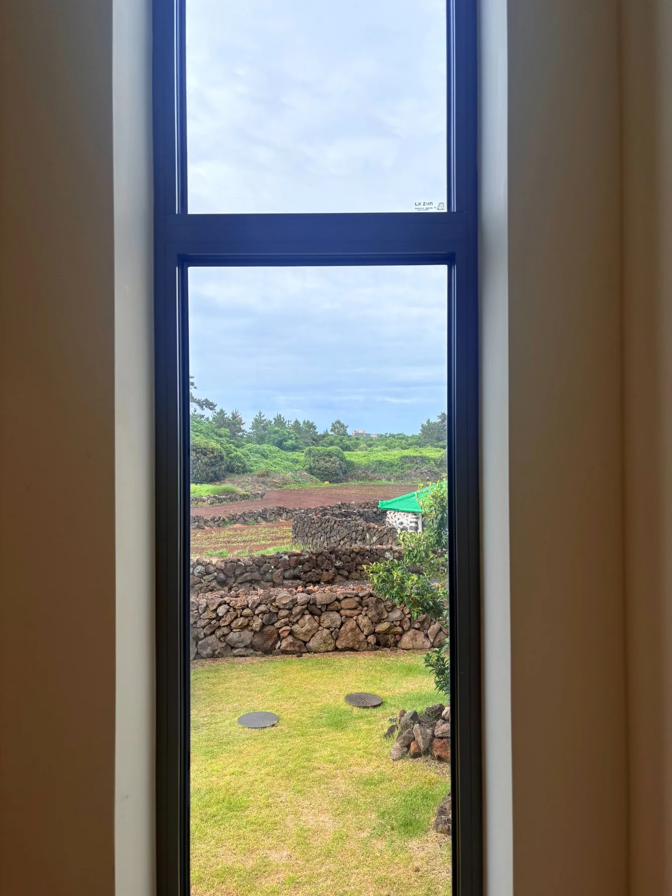
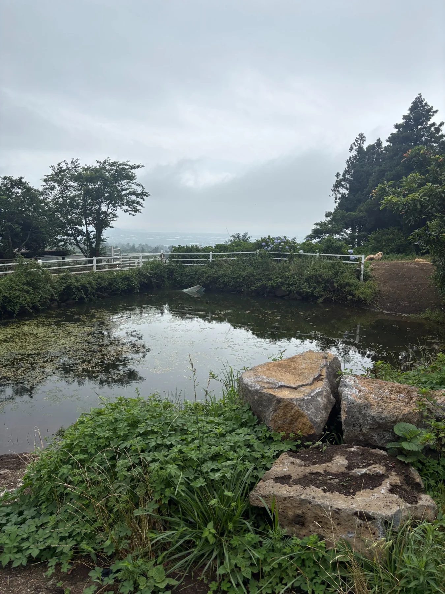
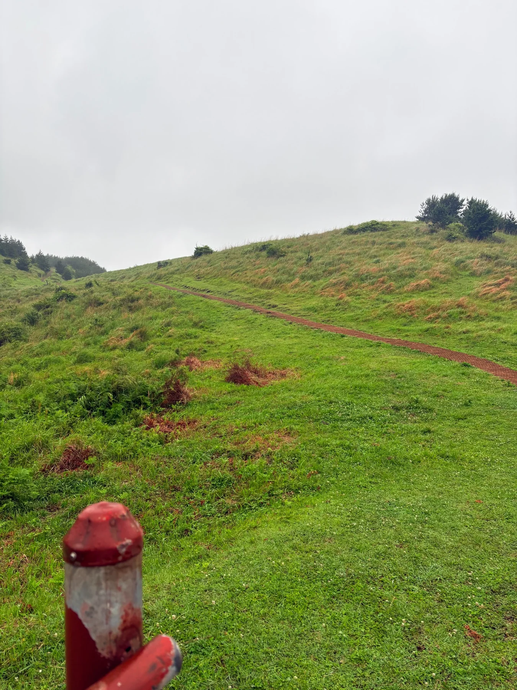
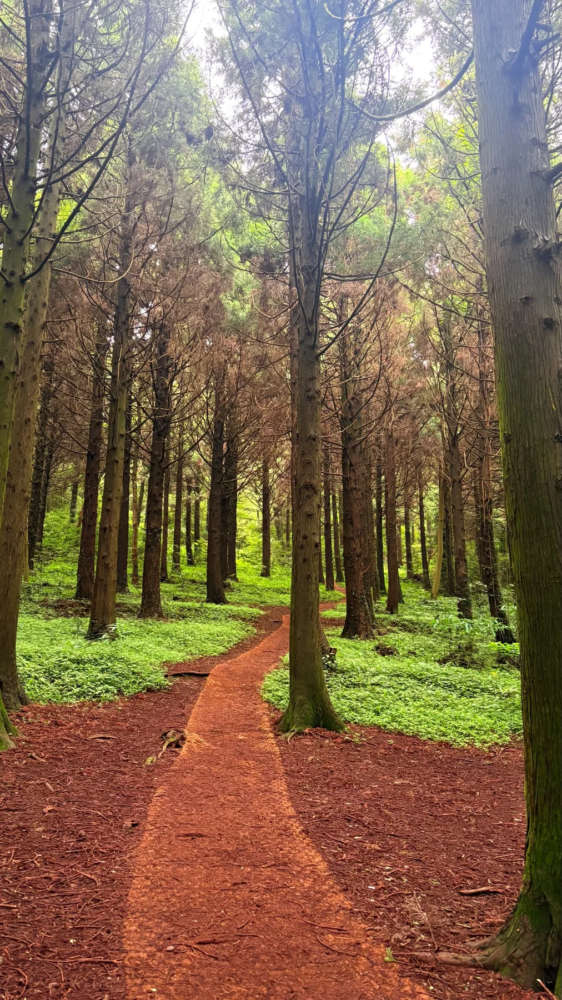
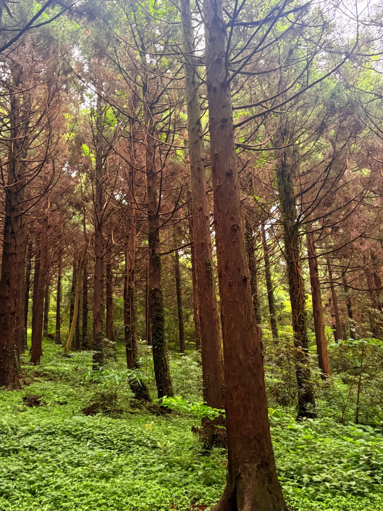
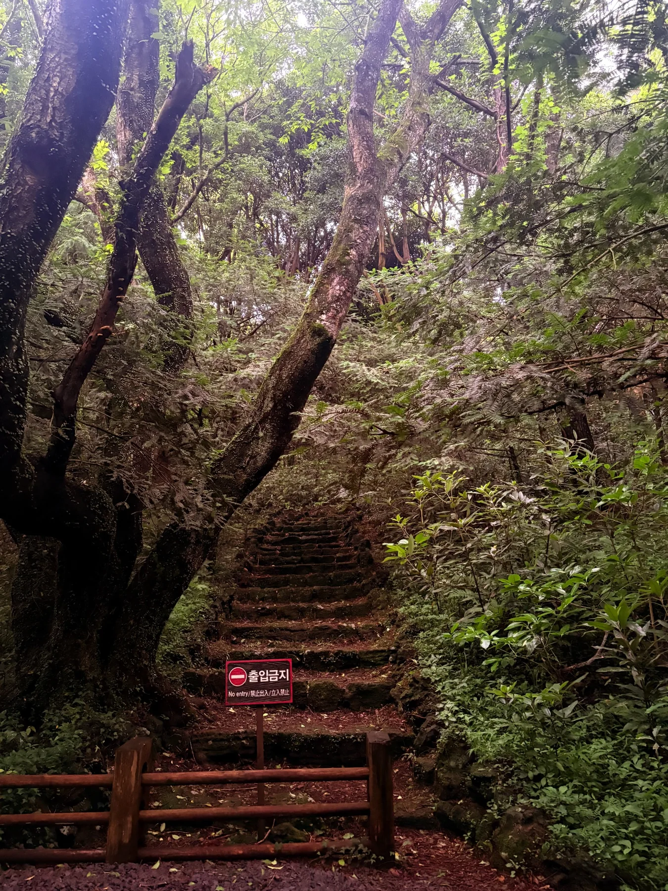
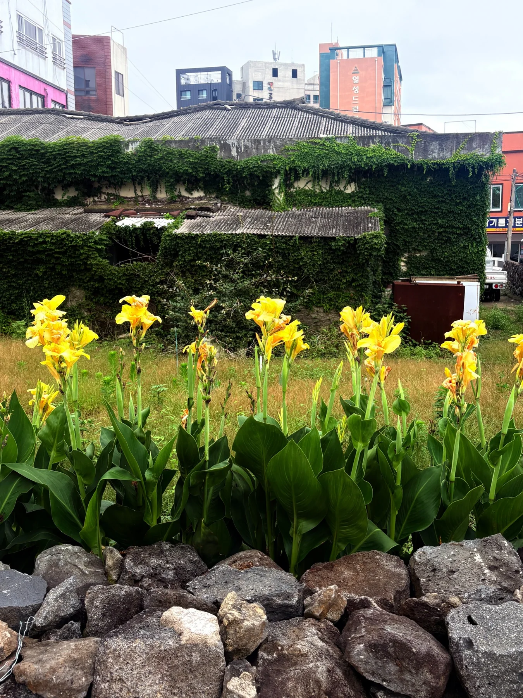
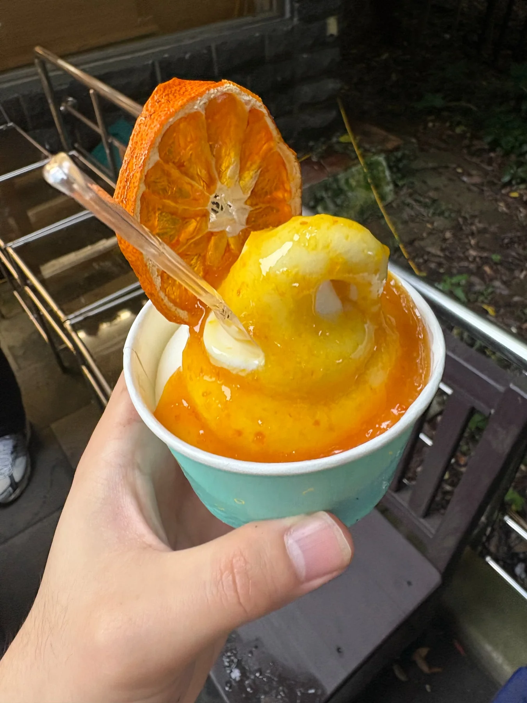
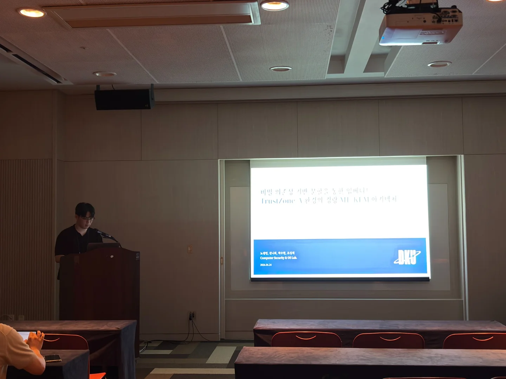
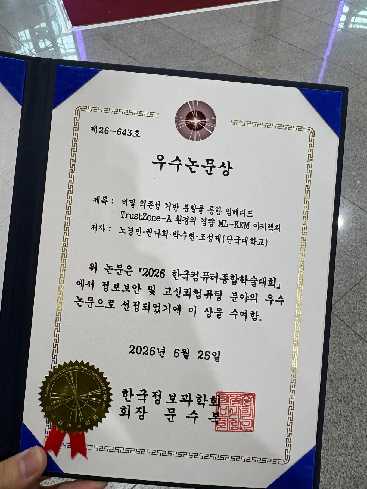